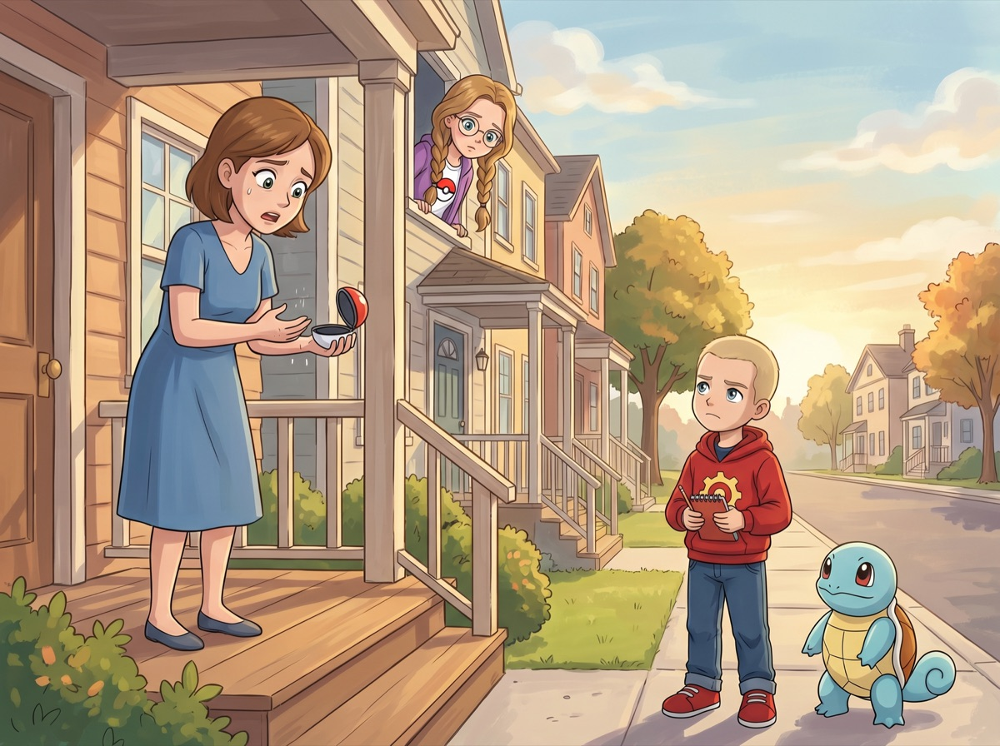
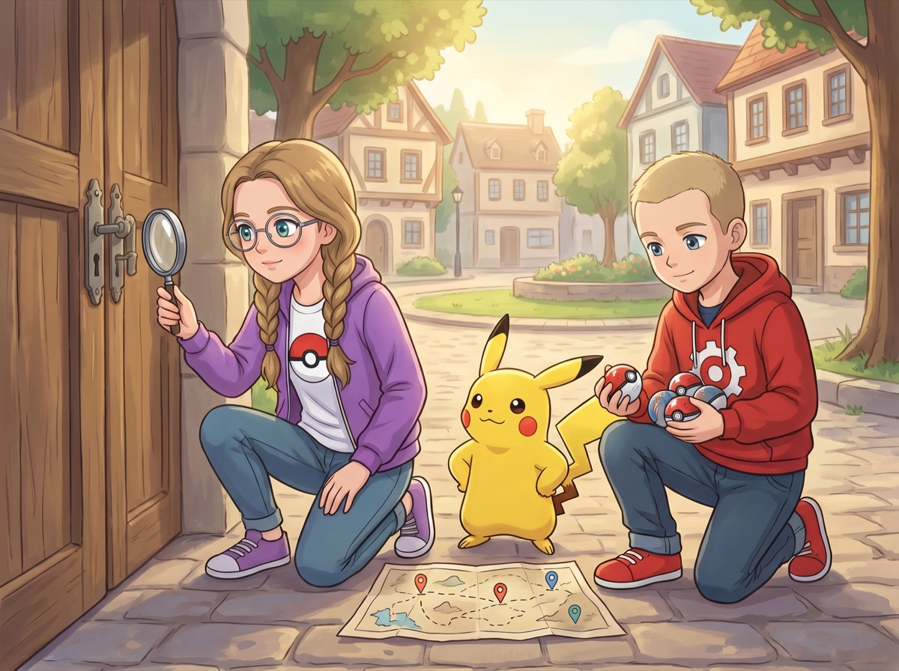
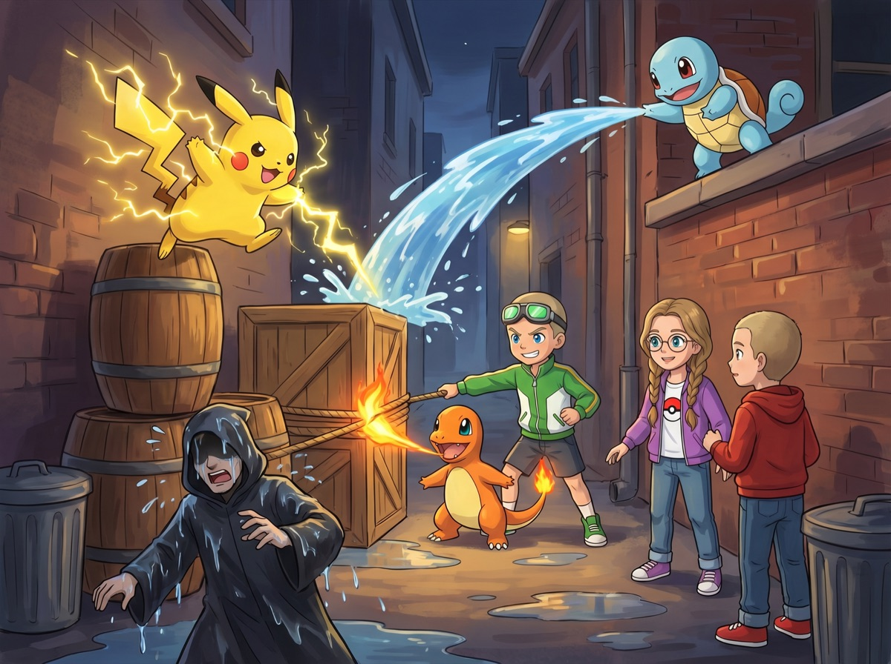
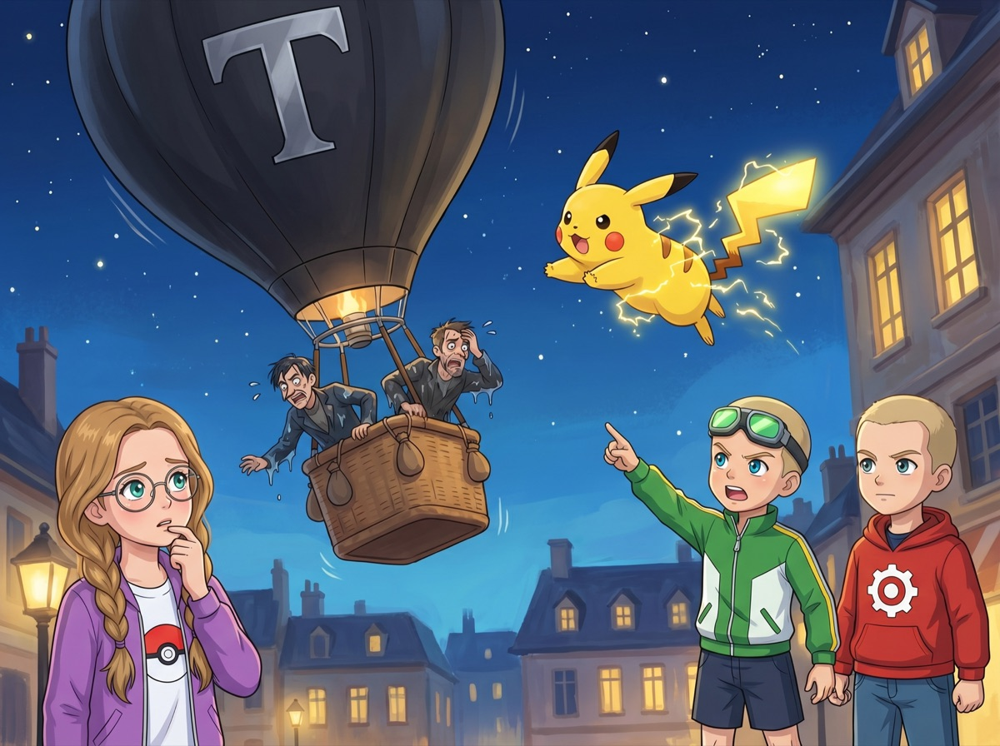

Сезон 1 — Три тренера и тайна Серебряного леса
Эпизод 4. «Тень в ночи»
Пустые покеболы

Утро в Каменном Броде начинается с крика.
— Мой Мэрип (Mareep)! Мэрип пропал!
Женщина в синем платье стоит на крыльце дома напротив гостиницы. В руках — раскрытый покебол. Пустой.
Кристи выглядывает из окна. Фиолетовые очки ещё на лбу, косички растрёпаны после сна.
— Четвёртый, — говорит она тихо.
Макстер высовывается из-за её плеча, одной рукой придерживая Чармандера (Charmander), который пытается залезть на подоконник.
— Четвёртый — это много?
— Это закономерность, — доносится голос снизу.
Ромус уже одет. Красная худи с логотипом шестерёнки застёгнута до горла, блокнот раскрыт на коленях. Сквиртл (Squirtle) сидит рядом и внимательно смотрит на хозяина — будто ждёт задания.
— Вчера хозяйка рассказала: три покемона пропали за неделю. Теперь четвёртый. — Ромус поднимает блокнот. — Все — ночью. Все — без следов. Покеболы не разбиты. Просто пустые.
— И что это значит?
— Что кто-то умеет вскрывать покеболы снаружи. А это не звери. Это люди с инструментом.
Пикачу (Pikachu) на плече Кристи навострил уши. Иви (Eevee) у её ног настороженно принюхался.
— Мы должны помочь, — говорит Кристи.
— Конечно! — Макстер вскакивает. — Найдём ворюг и надаём как следует!
— Сначала найдём, — Ромус уже выходит за дверь. — Пойдёмте. Мне надо поговорить с каждым, у кого пропал покемон.
Расследование

К обеду Ромус обошёл весь Каменный Брод. Каждому пострадавшему задавал одни и те же вопросы: когда пропал? где стоял покебол? были ли звуки?
Дедушка у рынка потерял Рэтикэйта (Raticate). Он произнёс, что покебол стоял на полке у окна. Окно было закрыто. Утром — всё так же закрыто, но покебол пустой.
— Значит, вор входил через дверь. Не через окно. — Ромус черкнул в блокноте.
Мальчишка потерял Катерпи (Caterpie). Он ответил, что слышал ночью тихий щелчок. Как замок.
— Один щелчок или два? — Ромус присел перед мальчишкой, чтобы быть на одном уровне.
— Один. А потом тихо. Утром покебол пустой.
Ромус записал: «Щелчок. Инструмент. Дверь, не окно.»
Кристи тем временем не сидела сложа руки. Она обошла все четыре дома, попросила показать покеболы и изучала каждый через лупу Покедекса. Пикачу обнюхивал каждый, поворачивая в лапках с видом эксперта.
— Пика-пика, — произнёс он и ткнул лапкой в замок.
— Видишь? — Кристи повернула покебол к свету, прищурилась. — Царапины на замке. Не от когтей — от инструмента. Какого-то специального. Смотрите — на всех четырёх одинаковые следы. Один и тот же инструмент, одна и та же рука.
Ромус захлопнул блокнот.
— Итог: это не дикие покемоны. Люди. С оборудованием. Профессионалы.
Макстер ходил с ними, но через час не выдержал:
— Ромус, мы когда будем кого-нибудь ловить?
— Когда поймём, кого ловить.
— А можно думать быстрее?
— Можно. Но тогда думаешь хуже.
Чармандер зевнул так широко, что из пасти вылетели искры.
Ромус разложил блокнот на скамейке. Внутри — карта Каменного Брода, нарисованная от руки. Четыре крестика — места пропаж.
— Все четыре дома — на краю города. Все — рядом с тёмными переулками. И каждую ночь вор двигается по часовой стрелке. Первый — север. Второй — восток. Третий — юг. Четвёртый — запад.
— И пятый... — начала Кристи.
— Пятый будет здесь. — Ромус поставил палец на карте. — Дом с зелёной крышей, рядом с мостом. Единственный тёмный переулок на северо-востоке.
— Ты вычислил, куда они придут? — Макстер присвистнул.
— Засада, — кивнул Ромус. — Я распределю позиции.
Он уже рисовал схему: кто где стоит, кто атакует первым, кто перекрывает выход.
Макстер посмотрел на схему, потом на Ромуса.
— Ты сейчас похож на командира.
— Я и есть командир. На сегодня.
Сквиртл выглянул из-за блокнота и важно кивнул. Командир так командир.
Засада и бой

Ночь. Переулок у дома с зелёной крышей. Фонарь не горит.
Кристи за бочками с Пикачу и Иви. Макстер за углом с Чармандером. Ромус на крыше сарая со Сквиртлом — сверху видно весь переулок.
Час ночи. Тишина.
— Макстер, не шевелись, — шепчет Кристи.
— Я чешусь.
— Потерпи.
Чармандер сидел рядом, накрытый курткой Макстера — чтобы огонь на хвосте не светил. Из-под куртки тянуло дымком.
— Макстер, твоя куртка тлеет, — прошептала Кристи.
— Опять?!
Полвторого ночи. Иви прижался к Кристи и задремал. Пикачу не спал — уши стояли торчком, как локаторы. На крыше Ромус не двигался. Сквиртл рядом — глаза блестели в темноте. Терпеливый, как и хозяин.
Два часа ночи. Шорох.
Из тумана за мостом появляются две фигуры. Высокий и худой, низкий и круглый. Оба в чёрных накидках с буквой «Т» на спине.
Высокий несёт инструмент — клещи с лампочкой на конце. Низкий тащит мешок. В мешке что-то шевелится.
— Тихо, Фокс, — шипит высокий. — Ещё один покебол — и план выполнен.
— Я тихо, Дарк! Это мешок шуршит! Покемоны внутри возятся!
— Скажи им замолчать.
— Они не слушаются. Я же не тренер, я похититель!
Ромус показывает кулак: «Ждать.»
Дарк подходит к двери. Вставляет инструмент. Лампочка загорается. Тихий щелчок.
— Сейчас! — кричит Ромус.
Пикачу прыгает с бочки — молния разрезает темноту. Электрический удар попадает в инструмент. Клещи искрят, дымятся и ломаются.
— Мой взломщик! — вопит Дарк.
Чармандер выскакивает из-за угла, прожигает верёвку на мешке точным выдохом огня. Мешок лопается — из него выкатываются три покебола.
— Сквиртл, водяной пульс! — командует Ромус сверху.
Сквиртл прыгает с крыши, крутится и выпускает волну воды. Фокс бросает дымовую шашку — вода смывает дым в секунду. Оба злодея стоят насквозь мокрые.
— Кто вы такие?! — Фокс вытирает лицо.
Дарк принимает позу — хотя с него капает:
— Мы — Команда Тень! Мы забираем покемонов для великого дела!
— Какого дела? — спрашивает Кристи.
— Этого мы вам не скажем! — гордо отвечает Фокс. — Потому что... Дарк, а мы знаем какого?
— Нам не говорят! Мы просто собираем!
— Это самые глупые злодеи, которых я видела, — тихо сказала Кристи.
— Эй! Мы не глупые! — обиделся Фокс. — Мы... неопытные.
— Фокс, замолчи! — рявкнул Дарк. — Отходим!
Из-за угла выплывает воздушный шар — чёрный, с буквой «Т». Злодеи запрыгивают в корзину.
— Мы ещё вернёмся! — кричит Дарк.
— Технически, вы сейчас отступаете, — замечает Ромус.
Пикачу прыгает и бьёт молнией — но шар уже слишком высоко.
— Пика! — топает лапкой.
— Ничего, — говорит Кристи. — Они вернутся. А мы будем готовы.
Когда шар исчез в ночном небе, Кристи уже собирала покеболы из разорванного мешка. Она проверила каждый через Покедекс — все три покемона внутри, живы и здоровы.
— Мэрип, Рэтикэйт, Катерпи, — перечислила она. — Все на месте.
Покемонов вернули хозяевам. Мальчишка прижал Катерпи к себе и не отпускал. Дедушка обнял Рэтикэйта и долго не отпускал. Женщина в синем платье плакала от радости, прижимая Мэрипа.
Хозяйка гостиницы принесла героям горячий чай и пирожки.
— Вы сделали то, что взрослые не могли неделю, — отозвалась она.
Макстер уплетал пирожок за пирожком. Чармандер сидел рядом и смотрел на пирожки с надеждой.
— Тебе нельзя, — промямлил Макстер с набитым ртом.
— Чар, — обиделся Чармандер.
Сквиртл молча подвинул Чармандеру половинку ягоды Оран. Чармандер посмотрел на него удивлённо. Потом взял. Не поблагодарил, но не отодвинулся. Прогресс.
Бульбазавр

Спали они до полудня — после ночной засады никто не мог проснуться раньше. Макстер спал в обнимку с Чармандером — на подушке остался подпалённый след от хвоста. Сквиртл спал в панцире, свернувшись у ног Ромуса. Иви лежал на коленях Кристи — она уснула сидя, не сняв очки.
После обеда собрали вещи. Пора уходить из Каменного Брода — впереди дорога.
У моста Ромус заметил что-то странное.
Зелёный покемон с луковицей на спине пил воду из ручья. Приземистый, крепкий, с мощными лапами и лозами, которые чуть торчали из луковицы.
— Бульбазавр (Bulbasaur), — прошептала Кристи. — Травяной тип. Очень редкий в этих краях.
Ромус замер. Смотрел на Бульбазавра не отрываясь. Бульбазавр поднял голову, посмотрел на них — настороженно, но не испуганно. Лозы чуть выдвинулись из луковицы — готов к бою.
— Я хочу его поймать. — Голос Ромуса был тихим, но твёрдым.
Макстер аж присвистнул.
— Ты? Первый настоящий бой с диким покемоном?
Ромус кивнул. Сквиртл рядом выпрямился и посмотрел на хозяина: «Готов.»
— Будь осторожен, — выдохнула Кристи. — Бульбазавр — не слабый. Лозы бьют сильно, а луковица копит солнечную энергию. На солнце он ещё мощнее.
Ромус посмотрел на небо. Облака закрывали солнце.
— Действуем сейчас. Пока облака — он слабее. Когда солнце выйдет, луковица зарядится, и будет сложнее. — Ромус шагнул вперёд. — Сквиртл, за мной.
Бульбазавр поднял голову, увидел тренера с покемоном и зарычал.
— Бульба! — Он ударил лозой по камню рядом. Трещина прошла по булыжнику. Предупреждение.
Ромус прищурился.
— Сильный.
— Может, я помогу? — предложил Макстер.
— Нет. Это мой бой.
Кристи положила руку на плечо Макстера.
— Пусть. Он справится.
— Сквиртл, водяной пульс. Не в него — рядом! — скомандовал Ромус.
Сквиртл выстрелил волной воды. Она ударила в землю рядом с Бульбазавром — брызги полетели в стороны. Бульбазавр отпрыгнул, рассерженный.
— Бульба-бульба! — Он хлестнул лозой — длинной, толстой, как хлыст. Сквиртл увернулся, но лоза задела его по панцирю. Сквиртл отлетел на два метра и прокатился по траве.
— Сквир! — Сквиртл поднялся, встряхнулся.
— Ты в порядке? — спросил Ромус.
— Сквир! — подтвердил Сквиртл. Готов.
Бульбазавр атаковал снова — обе лозы одновременно. Быстро, хлёстко. Сквиртл втянулся в панцирь — лозы стукнули по твёрдой раковине и отскочили.
— Панцирь держит, — отметила Кристи с моста. — Ромус, лозы возвращаются медленно!
Ромус уже видел это.
— Сейчас! Водяная струя, прямо!
Сквиртл высунулся из панциря и выстрелил мощной струёй воды. Бульбазавр принял удар луковицей — но его отбросило назад. Он упёрся лапами в землю, оставив борозды в траве. Но устоял.
Макстер не выдержал:
— Давай, Ромус! Лови его!
— Тихо. Не мешай. — Ромус не отрывал глаз от Бульбазавра.
Он достал покебол. Бросил.
Покебол попал в Бульбазавра. Красный луч обнял его. Покебол закрылся и упал на землю.
Затрясся. Раз. Два...
Щелчок — и покебол лопнул. Бульбазавр выскочил, злее прежнего.
— Бульба! — Он хлестнул лозой прямо по покеболу — тот отлетел к ногам Ромуса, разбитый.
— Не получилось, — сказал Макстер с трибуны моста.
— Ещё нет. — Голос Ромуса не дрогнул.
Он смотрел на Бульбазавра. Тот тяжело дышал, но не убегал. Стоял и смотрел на Ромуса. Не со страхом — с вызовом. Мол, «попробуй ещё раз».
Ромус сделал глубокий вдох. Не запаниковал. Не разозлился. Подумал.
— Подожди. Тут есть закономерность, — произнёс он. — Он бьёт лозами, когда мы атакуем в лоб. Но после удара лозы возвращаются медленно. Есть окно в две секунды.
— И что? — крикнул Макстер.
— Сквиртл, слушай внимательно. — Ромус присел на корточки перед своим покемоном. — Когда он ударит лозами — ты уворачиваешься. Пока лозы возвращаются — бьёшь водяной струёй по лапам. Он потеряет равновесие. Тогда я брошу покебол.
— Сквир! — Сквиртл кивнул.
Ромус встал и посмотрел на Бульбазавра.
— Давай.
Бульбазавр присел, напрягся — и рванул вперёд. Лозы вылетели из луковицы, как два зелёных хлыста. Сквиртл отпрыгнул вбок — лозы врезались в землю рядом, подняв комья глины. И начали втягиваться обратно.
— Сейчас! — крикнул Ромус.
Сквиртл выстрелил водой прямо по передним лапам Бульбазавра. Тот поскользнулся на мокрой траве — лапы разъехались. На секунду он замер, пытаясь устоять.
Достаточно.
Ромус бросил второй покебол. Точно, без замаха — как камешек по воде.
Красный луч. Покебол закрылся. Упал на траву.
Затрясся. Раз.
Два.
Три.
Тишина.
Щёлк.
Макстер подпрыгнул на мосту:
— Поймал! Ромус, ты поймал!
Кристи улыбнулась — широко.
— Отличный бой. Ты прочитал его, как книгу.
Ромус подошёл к покеболу. Поднял. Руки чуть дрожали. Нажал кнопку.
Бульбазавр появился рядом. Посмотрел на Ромуса долго — уже не злобно, а внимательно. Как боец, который признал силу противника.
— Хороший бой. Ты сильный.
— Бульба, — ответил Бульбазавр. Коротко. Но без злости. Мол, «ты тоже».
Макстер подбежал:
— Это было круто! Ты прямо как в мультике — покебол сломался, а ты не сдался!
Ромус пожал плечами.
— Я просто посмотрел, как он двигается. И подумал.
Сквиртл подошёл и протянул лапу.
— Сквир.
Бульбазавр посмотрел на лапу. Потом на Сквиртла. И пожал её лозой. Осторожно.
Ромус улыбнулся. Тихо, как он умел.
Иви подошёл и ткнулся носом в луковицу Бульбазавра — привет. Чармандер тоже подошёл, но хвост держал подальше. На всякий случай.
— Это и есть настоящий тренер, — бросила Кристи. — Не тот, кто сильнее. А тот, кто умнее.
Пикачу на её плече кивнул. Один раз. Одобрил.
Далеко за городом, на холме, стояла фигура в тёмном плаще. Капюшон скрывал лицо. Фигура наблюдала, как воздушный шар Команды Тень исчезал за горизонтом.
— Некомпетентные, — произнёс голос. Холодный, ровный. — Придётся заняться этим лично.
Ветер дёрнул полу плаща. Под ним мелькнул покебол — чёрный, с серебряной буквой «Т».
Фигура развернулась и ушла в тень леса. Туда, куда вела дорога героев.
Урок этого эпизода
Настоящая сила — в наблюдательности и терпении. Тот, кто видит закономерность, побеждает того, кто бьёт наугад.